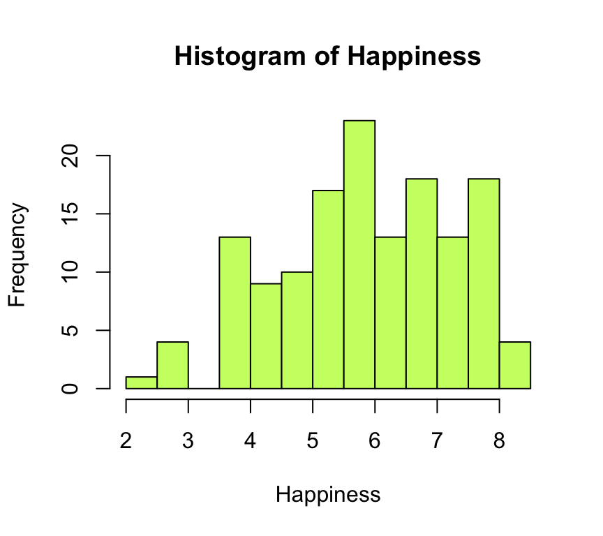
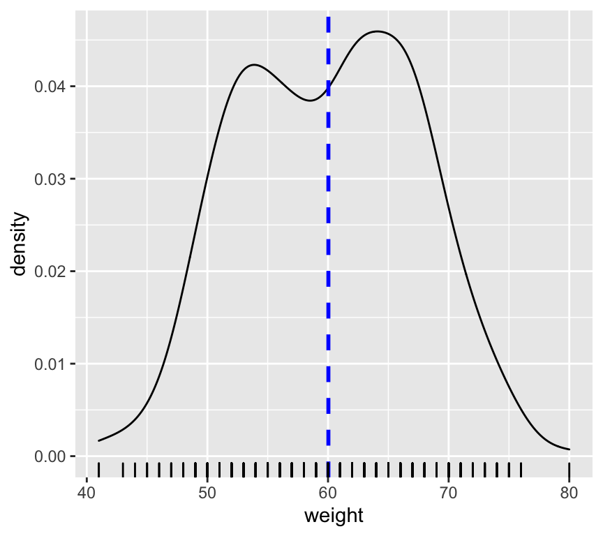
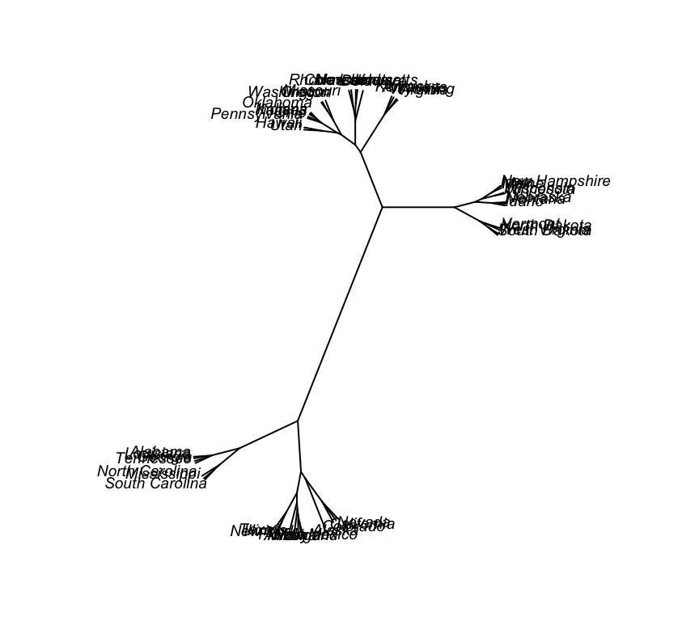
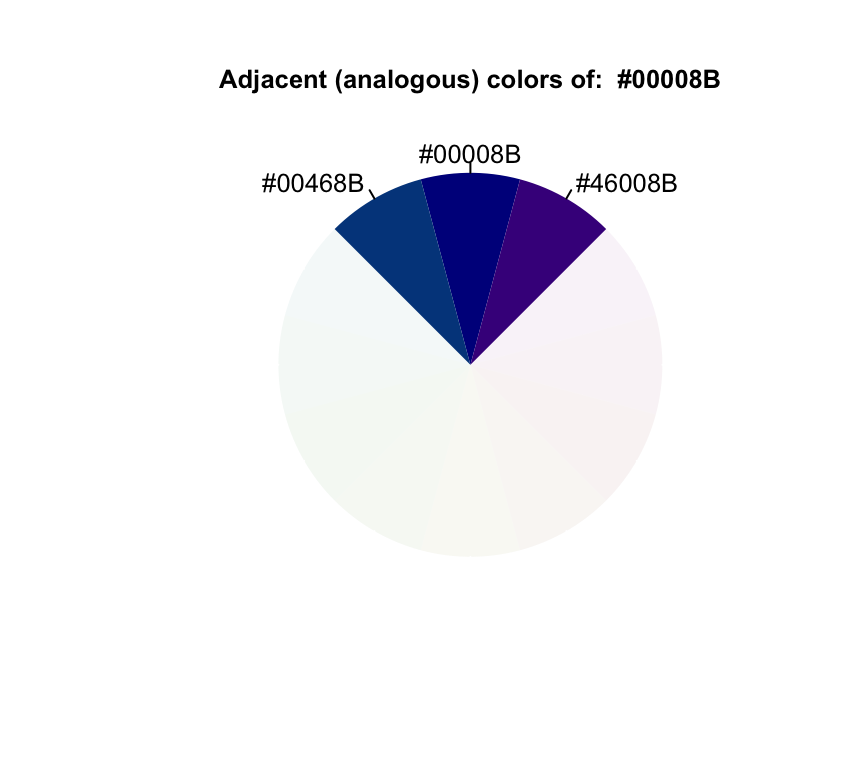

R dispone de múltiples funciones diseñadas para la representación gráfica de datos. Estas funciones se dividen en dos grandes grupos: funciones gráficas de alto nivel y de bajo nivel. La diferencia fundamental es que las funciones de alto nivel son las que generan gráficos completos, mientras que las de bajo nivel se limitan a añadir elementos a un gráfico existente (por tanto creado por una función de alto nivel).
Una página de referencia, con múltiples paquetes y ejemplos para hacer gráficos en R está en este link. Allí hay gráficos para representar: Distribuciones, Correlaciones, Rankings, Parte de un todo, Evolución, Mapas, Flujos, entre otros.
El paquete graphics (que se carga en memoria cada vez que se ejecuta R) contiene un buen número de funciones de alto y bajo nivel para generar gráficos. Existe una gran variedad de paquetes -plotrix, scatterplot3D, rgl, maps, shapes, y sobre todo ggplot2- que contienen muchísimas más funciones gráficas que mejoran y complementan las que vienen por defecto con R.
Estas funciones son las que generan gráficos completos. Entre las más utilizadas podemos citar ´plot()´ (gráficos de nubes de puntos, entre otros), hist() (histogramas), barplot() (diagramas de barras), boxplot() (diagramas de caja y bigote), pie() (diagrama de sectores) o pers() (superficies en 3D). Todas estas funciones disponen de multitud de argumentos que permiten controlar las etiquetas de los ejes, sus límites, títulos, tamaño, colores. Listamos los argumentos más relevantes:
xlim, ylim: controlan, respectivamente, la extensión de los ejes X e Y. Así xlim=c(0,10) indica que el eje X se extiende de 0 a 10; ylim=c(-5,5) indica que el eje Y va de -5 a 5. Si no se incluyen estos valores, R los ajusta por defecto de modo que se incluyan todos los valores disponibles en el dataframe.
xlab e ylab: especifican las etiquetas para los ejes X e Y respectivamente.
main: indica el título del gráfico.
sub: permite especificar un subtítulo.
Los ejemplos que se muestran más abajo permiten ver cómo utilizar estas opciones.
Dos argumentos importantes que son comunes a la mayoría de gráficos de alto nivel son los siguientes:
add=TRUE: fuerza a la función a actuar como si fuese de bajo nivel (intenta superponer la figura que genera a un gráfico ya existente). Esta opción no está disponible para todas las funciones.
type Indica el tipo de gráfico a realizar. En concreto:
Permiten añadir líneas, puntos, etiquetas, etc. a un gráfico ya existente. Son de gran utilidad para completar un gráfico. Entre estas funciones cabe destacar:
lines(): Permite añadir lineas (uniendo puntos concretos) a una gráfica ya existente.
abline(): Añade lineas horizontales, verticales u oblicuas, indicando pendiente y ordenada.
points(): Permite añadir puntos.
legend(): Permite añadir una leyenda.
text(): Añade texto en las posiciones que se indiquen.
grid(): Añade una malla de fondo.
title(): permite añadir un título o subtítulo.
Los siguientes argumentos opcionales son comunes a muchas funciones gráficas de alto y bajo nivel. Sus valores por defecto pueden obtenerse ejecutando la función par(). Se puede encontrar el significado y valores posibles de cada uno de estos argumentos (y muchos más) ejecutando help(par).
pch: Indica la forma en que se dibujaran los puntos (círculo, cuadrado, estrella, etc). El listado de valores y formas disponibles puede verse mediante help(points)
lty: Indica la forma en que se dibujan las líneas (continua, a trazos, …).
lwd: Ancho de las líneas.
col: Color usado para el gráfico (ya sea para puntos, líneas…). Puede vers un listado completo de los colores disponibles en R ejecutando la función colors(). help(colors) explica como obtener aún más colores. Este documento contiene una muestra de cada color.
font: Fuente a usar en el texto.
las: Cambia el estilo de las etiquetas de los ejes (0 paralelo a los ejes, 1 siempre horizontales, 2, perpendiculares a los ejes, 3 siempre verticales)
La gráfica se puede observar con más detalle haciendo click en “Zoom”, en área de Files. Y, haciendo click en “Export”, se puede guardar el gráfico en formato .png.
Esta función ofrece muchas variantes dependiendo del tipo de objeto al que se aplique. El caso más simple corresponde a la representación de dos variables x e y. En tal caso, plot(x,y) representa un diagrama de dispersión de puntos de y frente a x. Veamos ejemplos muy simples:
a<-rep(1:10) # = (1,2,3,4,5,6,7,8,9,10)
b<-rep(1,10) # = (1,1,1,1,1,1,1,1,1,1)
par(mfrow=c(1,3)) # creamos una matriz de gráficos de 1x2
plot(a,b, pch=1) # asignamos este gráfico al 1er panel de la matriz
plot(a,a, pch=2) # asignamos este gráfico al 2do panel de la matriz
plot(b,a, pch=3) # asignamos este gráfico al 3do panel de la matriz
A modo de ejemplo se muestra a continuación un gráfico de la esperanza de vida (LifeExpectancy, la variable dependiente y) frente al índice de felicidad (Happiness, la variable independiente x) en una muestra de 143 países. Los datos se encuentran en el dataframe HappyPlanetIndex del paquete Lock5Data. Para ver las variables de este dataframe: help(HappyPlanetIndex) y para conocer más datos sobre este estudio, ir a este link. Cargamos los datos y los graficamos con plot():
if (!is.element("Lock5Data", installed.packages()[,1])){
install.packages("Lock5Data")
}
library(Lock5Data)
data(HappyPlanetIndex) # indicamos que cargue en memoria, específicamente, el dataset HappyPlanetIndex
attach(HappyPlanetIndex) # para entender esta función, buscar ?attach
plot(Happiness,LifeExpectancy,pch=19,col="red")plot()Para ver un ejemplo utilizaremos el dataframe trees, disponible en el paquete datasets. Este dataframe contiene datos de tres variables medidas en una muestra de 31 cerezos: Girth (diámetro del tronco en pulgadas), Height (altura del árbol en pies) y Volume (volumen de madera en el árbol). Mostramos los datos a continuación:
data(trees)
head(trees)## Girth Height Volume
## 1 8.3 70 10.3
## 2 8.6 65 10.3
## 3 8.8 63 10.2
## 4 10.5 72 16.4
## 5 10.7 81 18.8
## 6 10.8 83 19.7El comando plot() ejecutado directamente sobre el dataframe muestra las nubes de puntos correspondientes a todas las posibles parejas de variables:
plot(trees)
Si sólo deseamos representar la altura del árbol frente al diámetro del tronco, especificamos simplemente estas dos variables:
with(trees,plot(Girth,Height))Un histograma es una representación gráfica de la distribución de frecuencias de una variable continua. Consiste en una sucesión de rectángulos levantados sobre un eje que representa los valores de la variable. Cada rectángulo tiene un área proporcional a la frecuencia de valores observada en el intervalo sobre el que se levanta. En esta sección aprenderemos a construir un histograma con R.
Con hist() dibujamos un histograma. Por ejemplo, el histograma de los niveles de felicidad en los distintos países se puede obtiene de esta manera:
data(HappyPlanetIndex)
attach(HappyPlanetIndex)
hist(Happiness,col="darkolivegreen1")
En el mismo paquete Lock5Data podemos encontrar el dataframe SalaryGender que contiene una muestra de 100 profesores universitarios de EEUU, 50 hombres y 50 mujeres; para cada uno se tiene el salario anual (en miles de dólares), la edad y la variable PhD que vale 1 si el profesor es doctor y 0 si no lo es. Podemos ver la distribución de salarios entre hombres y mujeres mediante un histograma combinado utilizando la función histStack() del paquete plotrix:
data(SalaryGender)
attach(SalaryGender)
Salary<-SalaryGender[,1]
Gender<-factor(SalaryGender[,2],levels=c(0,1),labels=c("Female","Male"))
library(plotrix)
histStack(Salary,Gender,legend.pos="topright")Vamos a ver un ejemplo de histograma al que le vamos a superponer una distribución de probabilidad teórica y otra estimada no paramétricamente, a insertar títulos, etiquetas, etc.
Usaremos los pacientes de cancer de mama (BRCA_all_data). En concreto, nos interesa ver el histograma de las edades de las pacientes.
Consultar la ayuda: help(hist). Para empezar,debemos pasar a la función hist los datos de la variable a representar, en nuestro caso la variable age_at_initial_pathologic_diagnosis.
hist(BRCA_all_data$age_at_initial_pathologic_diagnosis, main="Histograma de la edad de las pacientes",xlab="",ylab="Densidad")El eje de ordenadas muestra por defecto frecuencias absolutas; el gráfico que queremos construir es con frecuencias relativas en este eje. Para ello utilizamos la opción freq=FALSE; además le damos color al histograma mediante col=“lightcyan”
hist(BRCA_all_data$age_at_initial_pathologic_diagnosis,freq=FALSE, col="lightcyan", main="Histograma de la edad de las pacientes",xlab="",ylab="Densidad")
Para que en la gráfica haya espacio para la leyenda, alargamos el eje de ordenadas mediante la opción ylim:
hist(BRCA_all_data$age_at_initial_pathologic_diagnosis,freq=FALSE, col="lightcyan",ylim=c(0,0.05), main="Histograma de la edad de las pacientes",xlab="",ylab="Densidad")
El estimador de núcleo de la función de densidad del peso eviscerado se calcula mediante density(BRCA_all_data$age_at_initial_pathologic_diagnosis). Para superponer esta función al histograma utilizaremos la función de bajo nivel lines; además dibujamos la línea con grosor lwd=2 y de color rojo:
hist(BRCA_all_data$age_at_initial_pathologic_diagnosis,freq=FALSE, col="lightcyan",ylim=c(0,0.05), main="Histograma de la edad de las pacientes",xlab="",ylab="Densidad")
lines(density(BRCA_all_data$age_at_initial_pathologic_diagnosis),col="red",lwd=2)Ajustamos también a nuestros datos una función de densidad normal con media igual a la media estimada de la edad y desviación típica también igual a la observada en la muestra.
hist(BRCA_all_data$age_at_initial_pathologic_diagnosis,freq=FALSE, col="lightcyan",ylim=c(0,0.05), main="Histograma de la edad de las pacientes",xlab="",ylab="Densidad")
lines(density(BRCA_all_data$age_at_initial_pathologic_diagnosis),col="red",lwd=2)
curve(dnorm(x,mean=mean(BRCA_all_data$age_at_initial_pathologic_diagnosis),sd=sd(BRCA_all_data$age_at_initial_pathologic_diagnosis)),
add=TRUE, col="blue", lwd=2)Por último añadimos una leyenda explicando qué representa cada curva:

Se utiliza para dibujar diagramas de barras. El siguiente ejemplo muestra el número de países en cada una de las 7 regiones en que se dividió el planeta para el estudio de los niveles de felicidad:
library(Lock5Data)
data(HappyPlanetIndex)
attach(HappyPlanetIndex)
barplot(table(Region),xlab="Region",main="Happiness level by region", col=rainbow(10))El paquete plotrix contiene la función barp() que permite dar “volumen” a la barras:
library(Lock5Data)
data(HappyPlanetIndex)
attach(HappyPlanetIndex)
barp(table(Region), col="lightblue", cylindrical=TRUE, shadow=TRUE)
Es posible construir diagramas de barras por categorías. Podemos, por ejemplo representar la frecuencia de doctores por sexo utilizando los datos del dataframe SalaryGender:
data(SalaryGender)
attach(SalaryGender)
PhD<-factor(PhD,levels=c(0,1),labels=c("PhD","non PhD"))
barplot(table(Gender,PhD),beside=TRUE,legend.text=TRUE,col=c("pink","cyan"))barplot()Para ver este gráfico usaremos los pacientes de cancer de mama (BRCA_all_data). En concreto, nos interesa ver el porcentaje de pacientes vivos y muertos.
Nuestro objetivo en esta sección será construir el siguiente diagrama de barras con la variable vital_status. A esta gráfica la denominaremos “gráfica patrón” a lo largo del texto.

Para empezar, debemos pasar como argumento a dicha función los datos de la variable que queremos representar. En concreto, debemos especificar las frecuencias relativas de las categorías presentes en la variable especie. El cálculo de las frecuencias relativas se realiza a través de las funciones table() y prop.table().
barplot(prop.table(table(BRCA_all_data$vital_status)))
En la gráfica anterior ya tenemos representado el mismo contenido que en la gráfica patrón. Vamos ahora a darle color. El argumento que controla los colores de las barras del barplot es ´col´:
barplot(prop.table(table(BRCA_all_data$vital_status)),col=c("orange","blue"))
Ahora añadimos una leyenda utilizando el argumento legend.text:
barplot(prop.table(table(BRCA_all_data$vital_status)),col=c("orange","blue"),
legend.text=c("Vivos","Muertos"))La leyenda que que acabamos de colocar “pisa” una de las barras del gráfico. En la gráfica patrón podemos observar que el eje de ordenadas tiene una amplitud mayor, que va de 0 a 0.8 unidades. Para cambiar los límites del eje de ordenadas utilizamos el argumento ylim:
barplot(prop.table(table(BRCA_all_data$vital_status)),col=c("orange","blue"),
legend.text=c("Vivos","Muertos"),ylim=c(0,0.8))Otra opción es ampliar el eje X, de modo que quede sitio a la izquierda para colocar la leyenda. El problema, en principio, es que como este es un eje de categorías, no muestra valores numéricos, así que ¿como lo ampliamos?. La solución estriba en saber que barplotdevuelve de modo invisible las coordenadas de las posiciones de la base. La manera de capturar dichas coordenadas es asignar el gráfico a una variable y mostrar los valores de ésta (si además indicamos plot=FALSE nos ahorramos que R nos repita el gráfico, aunque tampoco tiene mayor importancia):
xCoords<-barplot(prop.table(table(BRCA_all_data$vital_status)),col=c("orange","blue"),
legend.text=c("Vivos","Muertos"),ylim=c(0,0.8), plot=FALSE)
xCoords## [,1]
## [1,] 0.7
## [2,] 1.9Vemos, por tanto, que las barras están en las posiciones 0.7 y 1.9. Probamos a reconstruir el gráfico fijando la extensión del eje X como xlim=c(0,3.3) (si no quedamos satisfechos de entrada podemos probar unos cuantos valores):
barplot(prop.table(table(BRCA_all_data$vital_status)),col=c("orange","blue"),
legend.text=c("Vivos","Muertos"),xlim=c(0,3.3))
El título se especifica mediante la opción main, escribiendo el texto del título entre comillas:
barplot(prop.table(table(BRCA_all_data$vital_status)),col=c("orange","blue"),
legend.text=c("Vivos","Muertos"),ylim=c(0,0.8),main="Mujeres con cancer de mama")
Mediante el argumento ylab especificamos el texto (también entre comillas) que deseamos como etiqueta del eje Y:
barplot(prop.table(table(BRCA_all_data$vital_status)),col=c("orange","blue"),
legend.text=c("Vivos","Muertos"),ylim=c(0,0.8),main="Mujeres con cancer de mama", ylab ="Frecuencias Relativas")
El párametro cambia la orientación de las etiquetas del eje de ordenadas (consultar help(par) para ver las distintas opciones)
barplot(prop.table(table(BRCA_all_data$vital_status)),col=c("orange","blue"),
legend.text=c("Vivos","Muertos"),ylim=c(0,0.8),main="Mujeres con cancer de mama", ylab ="Frecuencias Relativas",las=1)Para cambiar el tipo de fuente que se usa en las letras de las etiquetas del eje de abscisas se utiliza el argumento font.axis (consultar help(par) para ver las distinas fuentes posibles)
barplot(prop.table(table(BRCA_all_data$vital_status)),col=c("orange","blue"),
legend.text=c("Vivos","Muertos"),ylim=c(0,0.8),main="Mujeres con cancer de mama", ylab ="Frecuencias Relativas",las=1,font.axis=4)
Aporta la misma información que el diagrama de barras, pero en forma de diagrama de torta:
library(Lock5Data)
data(HappyPlanetIndex)
attach(HappyPlanetIndex)
RegionLabels<-c("South America", "North America", "North Africa", "South Africa", "India", "Asia", "East Europe")
pie(table(Region), RegionLabels, col = rainbow(length(table(Region))))
legend("topright", RegionLabels, cex = 0.8, fill = rainbow(length(table(Region))))El paquete plotrix permite elaborar diagramas de torta en 3D mediante la función pie3D:
pie3D(table(Region))pie3D(table(Region), explode = 0.1, main="Cantidad de paises incluidos en el estudio", labels = RegionLabels, labelcex = 0.9)
En ocasiones es necesario visualizar el comportamiento de dos distribuciones normales. En concreto, puede resultar interesantes saber cuán diferentes son. Vamos a mostrar esto con un ejemplo.
Vamos a generar un data.frame con 400 pacientes con 2 columnas:
set.seed(1234)
df <- data.frame(
sex=factor(rep(c("F", "M"), each=200)),
weight=round(c(rnorm(200, mean=55, sd=5),
rnorm(200, mean=65, sd=5)))
)library(ggplot2)
p <- ggplot(df, aes(x=weight)) +
geom_density()
p# Agregamos una línea para la media y
# una regla (rug) en el eje x que indica dónde caen los datos.
p+ geom_vline(aes(xintercept=mean(weight)),
color="blue", linetype="dashed", size=1) + geom_rug()
# la regla es muy útiles cuando hay muchos datos para saber ver cómo es la densidad/cercanía de los datos.En la gráfica se ve cómo las dos funciones de densidad están solapadas.
library(plyr)
# Vamos a calcular la media de cada grupo:
mu <- ddply(df, "sex", summarise, grp.mean=mean(weight))
ggplot(df, aes(x=weight, fill=sex)) +
geom_density()# Indicamos un relleno semi-transparente:
p<-ggplot(df, aes(x=weight, fill=sex)) +
geom_density(alpha=0.4)
p# Agregamos una línea para las medias de cada grupo:
p+geom_vline(data=mu, aes(xintercept=grp.mean, color=sex),
linetype="dashed")Los datos del ejemplo anterior también se pueden ver con los gráficos violin, que visualizan la cantidad de datos en el ancho de la gráfica:
ggplot(df, aes(sex, weight)) +
geom_violin(aes(fill = weight))Lleva a cabo la representación de diagramas de caja, también conocido como gráficos de “caja y bigote”. El objetivo de un boxplot es mostrar cómo se distribuyen los datos en una muestra. Un boxplot mostrará:
Veamos un ejemplo simple:
x <- seq(5, 15, length=1000) # generamos 1000 números entre 5 y 15
y <- rnorm(x, mean=10, sd=3) # generamos 1000 números al azar.
# generamos 1000 datos al azar, con media 4 y desvío 2
# veamos los datos:
summary(y)## Min. 1st Qu. Median Mean 3rd Qu. Max.
## 1.209 7.980 9.989 9.949 11.918 19.588Boxplot() muestra la información de summary() de manera gráfica:
boxplot(y)La misma información se puede ver en una función de densidad:
plot(density(y)) # función de densidad "empírica"
curve(dnorm(x, mean=10, sd=3), add=TRUE, col=3) # la función de distribución de xSi se “acuesta” el boxplot y se lo solapa sobre la función de distribución, debe coincidir la línea de la media (del boxplot) con el máximo de la función de densidad.
El siguiente ejemplo muestra el reparto de los niveles de felicidad entre las distintas regiones del globo:
library(Lock5Data)
data(HappyPlanetIndex)
attach(HappyPlanetIndex)
boxplot(Happiness~Region,col="gold",xlab="Region",ylab="Happiness level",
main="Average happiness level by region")Esta función realiza representaciones tridimensionales (superficies). El dataframe volcano que se distribuye junto con la instalación básica de R (ver help(volcano)) contiene información topográfica del volcán Maunga Whau en Auckland, Nueva Zelanda, definida sobre una malla de 870×610 metros, con un nodo cada 10 metros. Podemos trazar el perfil topográfico de este volcán mediante:
persp(x = 10*(1:nrow(volcano)), y=10*(1:ncol(volcano)), z=3*volcano,
theta = 135, phi = 30, col = "green3", scale = FALSE,
ltheta = -120, shade = 0.75, border = NA, box = FALSE, main="Volcán Maunga Whau, Auckland, NZ")library(lattice)
library(gplots)
# generamos 4 matrices de 5x10, cada una:
y <- lapply(1:4, function(x) matrix(rnorm(50), 10, 5))
## Generaremos 4 variantes de mapas de calor:
x1 <- levelplot(y[[1]], col.regions=colorpanel(40, "darkblue", "yellow", "white"), main="colorpanel")
x2 <- levelplot(y[[2]], col.regions=heat.colors(75), main="heat.colors")
x3 <- levelplot(y[[3]], col.regions=rainbow(75), main="rainbow")
x4 <- levelplot(y[[4]], col.regions=redgreen(75), main="redgreen")
print(x1, split=c(1,1,2,2))
print(x2, split=c(2,1,2,2), newpage=FALSE)
print(x3, split=c(1,2,2,2), newpage=FALSE)
print(x4, split=c(2,2,2,2), newpage=FALSE) heatmap(y[[1]], scale = "column")En algunas circunstancias es necesario agrupar los datos y encontrar posibles similitudes entre ellos. El Análisis de Agrupación Jerárquico (hierarchical cluster analysis (HCA)) es una técnica que agrupa los datos en función de similitud. Para conocer más sobre HCA, sugerimos consultar este material online.
Para profundizar en paquetes, otras herramientas y parámetros no incluidos en este tutorial, recomendar este hands-on.
Usaremos un dataset incluido en la versión stantard de R. USArrests contiene 4 ratios de criminalidad de 50 estados de EEUU, del año 1973. Los ratios están expresados por cada 100.000 habitantes. También se incluye el porcentaje de la población que vive en áreas urbanas.
data(USArrests)dd <- dist(scale(USArrests), method = "euclidean") # cómputo de las distancias entre datosSe recomienda leer la ayuda de esta función: ?dist. En este caso, optamos por utilizar la distancia euclidea aunque podríamos haber utilizado otra. Se puede ver la matriz resultante (NxN) con la instrucción View(as.matrix(dd)). Es lógico que la matriz diagonal (diag(as.matrix(dd))) sea 0 ya que no hay distancia entre un objeto y él mismo.
hc <- hclust(dd, method = "ward.D2") #plot(hc, hang = -1, cex = 0.6)Con hang = -1 se indica que las hojas se muestren en el mismo nivel.
library("ape")
plot(as.phylo(hc), type = "unrooted", cex = 0.6,
no.margin = TRUE)
plot(as.phylo(hc), type = "fan")Es posible establecer grupos y manejarlos de manera independiente. Por ejemplo:
clus4 = cutree(hc, 4) # establecemos 4 clusters
which(clus4==1) # nos quedamos con los estados del 1º cluster## Alabama Georgia Louisiana Mississippi North Carolina South Carolina
## 1 10 18 24 33 40
## Tennessee
## 42Se puede visualizar el corte en el dendograma con una línea:
plot(hc, hang = -1, cex = 0.6)
abline(h = 4, lty = 2) # dibujar la línea en la altura 4. La correcta selección de colores es fundamental para conseguir visualizaciones elegantes y atractivas. En esta sección veremos el paquete colortools: una herramienta simple y potente que facilita paletas de colores.
La armonía entre colores está representada en la siguiente rueda de colores:

Definiciones básicas:
Monocromático: variaciones del mismo color.
Análogo: los colores que se tocan en la rueda crean una combinación de colores armoniosa.
Complementario: los colores de los extremos opuestos de la rueda proporcionan el mayor contraste.

División complementaria: una variación del esquema complementario que usa dos colores en cada lado de un color directamente complementario. Estos colores tienen un alto contraste visual pero con menos tensión visual que los colores puramente complementarios.
Triádico: tres colores igualmente espaciados alrededor de la rueda de colores crean un interés visual intenso.
Tetrádico: Dos pares de colores complementarios. Este esquema es popular porque ofrece un fuerte contraste visual al tiempo que conserva la armonía.

colortoolslibrary(colortools)wheel("darkblue", num = 12)## [1] "#00008B" "#46008B" "#8B008B" "#8B0046" "#8B0000" "#8B4500" "#8B8B00" "#468B00" "#008B00"
## [10] "#008B45" "#008B8B" "#00468B"En el ejemplo anterior utilizamos el color darkblue y pedimos 12 variantes.
adjacent("darkblue")
## [1] "#00008B" "#46008B" "#00468B"complementary("steelblue")## [1] "#4682B4" "#B47846"splitComp("steelblue")## [1] "#4682B4" "#B4464B" "#B4AF46"tetradic("steelblue")## [1] "#4682B4" "#7846B4" "#B47846" "#82B446"square("steelblue")## [1] "#4682B4" "#AF46B4" "#B47846" "#4BB446"sequential("steelblue")## [1] "#B4B4B4FF" "#ABB0B4FF" "#A2ACB4FF" "#99A8B4FF" "#90A4B4FF" "#87A0B4FF" "#7E9BB4FF" "#7597B4FF"
## [9] "#6C93B4FF" "#638FB4FF" "#5A8BB4FF" "#5187B4FF" "#4883B4FF" "#3F7FB4FF" "#367BB4FF" "#2D77B4FF"
## [17] "#2473B4FF" "#1B6EB4FF" "#126AB4FF" "#0966B4FF" "#0062B4FF"Si quieres generar una paleta de colores con una herramienta online, puede utilizar Color Scheme Designer.